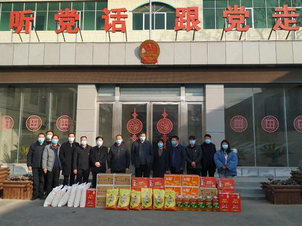
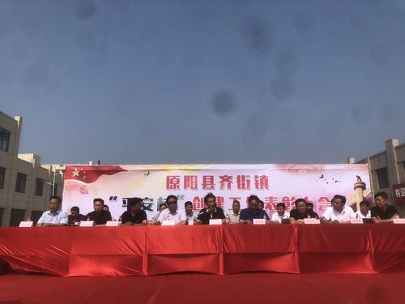
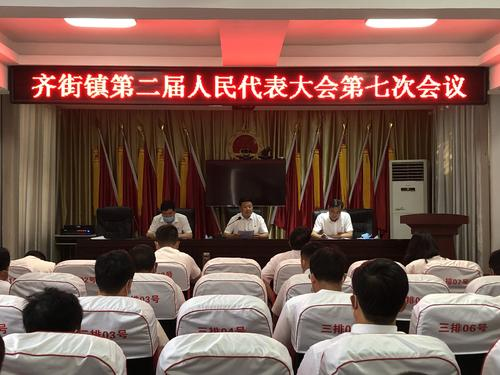
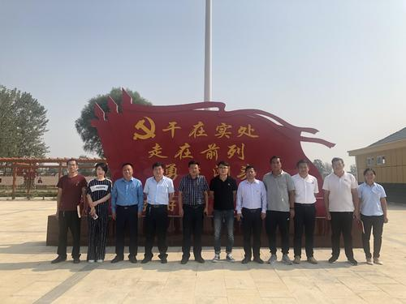

齐街镇位于原阳县东部，地处原、延、封三县交界。焦韦线与国道327在乡境内十字交叉，交通便利。全乡51235人（2017） [1] ，耕地61770亩。其中55000亩为旱作，其它为水稻和经济作物，主要种植水稻、小麦、玉米、花生、蔬菜等作物，是一个典型的农业大乡。 齐街镇原名齐亦集，解放后改名齐街乡，2008年7月，撤乡建镇，更名为齐街镇。
齐街镇位于原阳县东部，地处原、延、封三县交界，距县城23千米。人口51235人（2017） [1] 。辖北街、孙庄、麦寨、李辛庄、南街、高东、龙王庙、西留后、邹寨、南黑石、苏寨、东街、李庄、丁楼、于庄、西老河、中留后、东留后、冯庄、店东、楚圪垱、刘文寨、高北、瓜李、高南、杏元、赵胜庄、牛博、西川、柳园、南留后、孟寨、西街、楚寨、马辛庄、沙岗、北黑石、东川、吴寨、朱楼、化庄、马滩铺42个行政村。原（阳）齐（街）公路直通县城。
.jpg "齐街镇政府")
[2006年代码]410725213：～201北街村 ～202孙庄村 ～203麦寨村 ～204李辛庄村 ～205南街村 ～206高东村 ～207龙王庙村 ～208西留后村 ～209邹寨村 ～210南黑石村 ～211苏寨村 ～212东街村 ～213李庄村 ～214丁楼村 ～215于庄村 ～217西老河村 ～218中留后村 ～219东留后村 ～220冯庄村 ～221店东村 ～222楚圪垱村 ～223刘文寨村 ～224高北村 ～225瓜李村 ～226高南村 ～227杏元村 ～228赵胜庄村 ～229牛博村 ～230西川村 ～231柳园村 ～232南留后村 ～233孟寨村 ～234西街村 ～235楚寨村 ～236马辛庄村 ～237沙岗村 ～238北黑石村 ～239东川村 ～240吴寨村 ～241朱楼村 ～242化庄村 ～243马滩铺村 [2]
1955年建齐街中心乡，1956年改乡，1958年改公社，1983年复改乡。1996年，面积69.2平方千米，人口4.2万人，辖邹寨、店东、孙庄、吴寨、化庄、麦寨、冯庄、沙岗、孟寨、南街、柳园、于庄、牛博、北街、李庄、杏园、西川、丁楼、东川、苏寨、朱楼、高北、楚寨、高南、瓜李、东街、西街、高东、李辛庄、东留后、中留后、南留后、西留后、北黑石、马辛庄、马滩铺、西老河、南黑石、龙王庙、刘文寨、楚圪垱、赵胜庄42个行政村。
2009年，辖42个村委会：北街村、南街村、东街村、西街村、高东村、高北村、高南村、东留侯村、中留侯村、西留侯村、南留侯村、牛博士寨、孟寨、楚寨、吴寨、邹寨、苏寨、麦寨、刘文寨、李辛庄、马辛庄、李庄、于庄、赵胜庄、化庄、北黑石村、南黑石村、东川村、西川村、孙庄、冯庄、柳园村、龙王庙村、丁楼村、西老河村、店东村、楚圪垱村、瓜李村、杏元村、沙岗村、朱楼村、马滩铺村。
草帘编制业近年来我镇柳园村、郑村在农业加工业中不断探索。柳园等村自1976年开始大规模种植水稻，1977年前后开始出现零星草编户，随着市场草编制品需求量逐年增大，从事草编的农户逐年增多，镇党委、政府将庭院稻草加工业作为“富民工程”和农业产业化的重要项目来抓，实行“公司+农户”的模式进行管理，促进了全镇草编业的迅速发展。大型织包机、大型稻草挤压机和草包成型机的自动化草编加工设备逐渐代替了简单手工设备，草编制品也由原来的草绳、草袋两种发展到粗绳、细绳、大草袋、小草袋、草苫、草帘、草锭等十几个品种，远销河北、山西、陕西、内蒙、甘肃等27个省、市、自治区，全镇年消化稻草800万公斤（外购邻乡镇稻草），年创产值600万元，实现利润100万元，平均增收800元。镇政府多次被市、县政府授予“发展庭院经济先进乡镇”和“公司+农户先进单位”。
近年来，镇党委、政府立足优势，瞄准市场，强化引导，狠抓了经济结构调整，全镇经济呈现了健康快速发展势头。催生了六大优势产业，形成了富有特色的亮点经济。
优势一：传统农业基础好，优质稻、麦面积大、产量高。全镇优质小麦面积稳定在4.5万亩以上，水稻全部实现了优质化。为农民增收提供了可靠保证。
优势二：高效农业发展势头猛，效益显著。以焦韦线为轴心的绿色大棚蔬菜种植规模初现。全镇蔬菜大棚已超3000亩，齐街黄瓜、西红柿等蔬菜已占据郑州陈庄市场60%以上。
优势三：无公害养殖业点多面广，村多户多，大的养殖场多。养殖业成为新的支柱型经济。
优势四：以龙王庙村为首的“四位一体”农业生态模式后势强劲。龙王庙等村以“绿豆加工粉皮-----粉皮加工下脚料养猪-----猪粪便生产沼气，用于农户生活、生产-----沼渣、沼液肥田”的循环生态经济模式，受到了领导、专家的一致认可，为农业产业化经营探索了一条新路子。
优势四：以龙王庙村为首的“四位一体”农业生态模式后势强劲。龙王庙等村以“绿豆加工粉皮-----粉皮加工下脚料养猪-----猪粪便生产沼气，用于农户生活、生产-----沼渣、沼液肥田”的循环生态经济模式，受到了领导、专家的一致认可，为农业产业化经营探索了一条新路子。
优势六：焦韦线与省道311的十字交界，较大改善了全镇的生活、生产及出行条件，加之位处三县交界，为商贸流通、发展外向型经济提供了得天独厚的条件。
一是农业基础设施落后，与农业产业化经营极不配套。主要表现在农田水利设施落后。由于齐街镇地处灌河河尾，加之绝大部分灌河未经硬化，造成了农业用水困难。农村机井等水利设施陈旧，破坏严重，数量上、质量上不符合农业产业化规划，制约了全镇农业的快速发展。
二是工业企业基础落后，企业少、企业小，发展后劲不足。
三是乡村道路亟待修建。尽管焦韦线与省道311的贯穿使全镇区位优势凸显，但镇与村之间，村与村之间道路坑凹，破坏严重，出行条件极差。这是制约经济发展的重要原因之一。
四是乡村其他基础设施落后。表现在：一、镇计生所、村计生室、村党员活动室等残缺不全，仅有的或已成危房或暂借民房，村上群众没有文化活动场所，这些很大程度上制约了农村政治文明、精神文明的协调发展；二、乡村中小学危房改造工作任务艰巨，库内危房尚有2所学校1440m2，没有完成任务，由于受危改数量等限制，全镇仍有部分危房未改造升级，制约了全镇教育质量的进一步提高。三、村级医疗条件较差，农民就近就医困难。
在09年的工作中，镇党委、政府结合齐街镇情，决心发挥优势求发展，克服劣势求突破。一是进一步加大农村经济结构调整力度，进一步巩固、壮大农村经济，加快农业产业化进程，积极推广循环经济，促进农民增收，农业增效。二是进一步加大招商引资力度，想方设法上项目、上企业，谋求项目带动、工业兴镇之路。三是转变作风、求真务实，加快农村基础设施建设，加强基层民主政治建设，努力创造高效的发展速度，和谐的发展环境，努力推动全镇经济及各项社会事业的快速发展。


